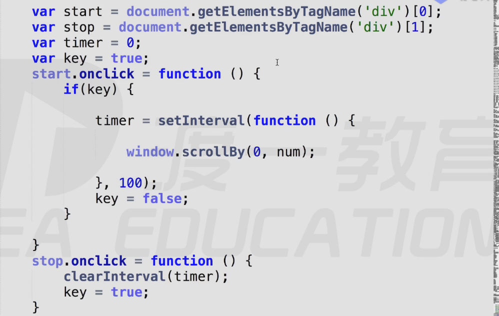

查看滚动条距离
Window.pagexOffset/pageyOffset
ie8以及ie8以下的浏览器不兼容
documnet.body/documentElement.scrollLeft/scrollTop
兼容性比较混轮，用时取两个值相加，因为不可能存在两个同时有值
封装兼容方法，求滚动轮滚动距离，getSrollOffset()
function getScrollOffset(){
return{
x:Window.pagexOffset,
y:Wiindow.pageyOffset
}
}else{
return{
x:document.body.ScrollLeft+document.documentElement.Scrollleft,
y:document.body.ScrollTop+documentElement.ScrollTop
}
}
}
查看视口尺寸
-
Window.innerWidth/innerHeiht
ie8及以下不兼容
-
document.documentElement.clientWidth/clienHeight
标准模式下，任意浏览器都兼容
-
document.body.clienWidth/clienHeight
适用于怪异模式下浏览器
- 封装兼容性方法，返回浏览器视口尺寸getViewProtOffset
function getViewprotOffset(){
if(window.innerwidth){
return{
w:Window.innerWidth,
h:window.innerHeight
}
}else{
if(document.ComputerMode==="BackComput"){
return{
w:document.body.clientWidth,
h;document.body.clintHeight
}
}else{
return{
w:document.documentElement.clientWidth,
h:document.documentElement.clinetHeight
}
}
}
查看元素尺寸
- dom.OffsetWidth,dom.Offsetheight
查看元素位置
-
dom.OffsetLeft,dom.OffsetTop
对于无定位的父级元素返回相对的文档坐标，对有父级元素的定位，返回相对于最近的有定位的父级的坐标
-
dom.OffsetParent
返回最近的有定位父级，如返回body.OffsetParent返回null
eg:求元素相对于文档的坐标.getElementPosition
window的三方法
scroll(),scrollTo(),SCrollBy()
三个方法功能类似，用法都是将x，y坐标传入，即实现让滚动轮滚动当前位置。
区别：ScrollBy（）会在之前的数据基础上做累加。可以做快速阅读功能。

脚本化css
读写元素css属性
-
dom.style.prop
可读写行间样式，没有兼容性问题，碰到float这样保留字属性，前面加css。
eg：float--->cssfloat
复合属性必须拆解，组合单词变化小驼峰式写法，写入的值必须是字符串格式
-
查询计算样式：
Windo.getComputedStyl(ele,null)
null可以选中伪元素
window.getComputerStyle(div,after)
-
计算样式只读：
返回的计算样式的值是绝对值，没有相对单位。ie8以及以下不兼容
查询样式；ele.currentStyle
计算样式只读
返回的计算样式的值不是经过转换的绝对值。ie才独有
封装兼容方法getStyle(elem,prop)
function getStyle(elem（属性）,prop(参数)){
if (window.getComputedStyle){
return window.getComputedStyle(elem,prop)[prop];
}else{
return elem.currentStyle[prop]
}
}